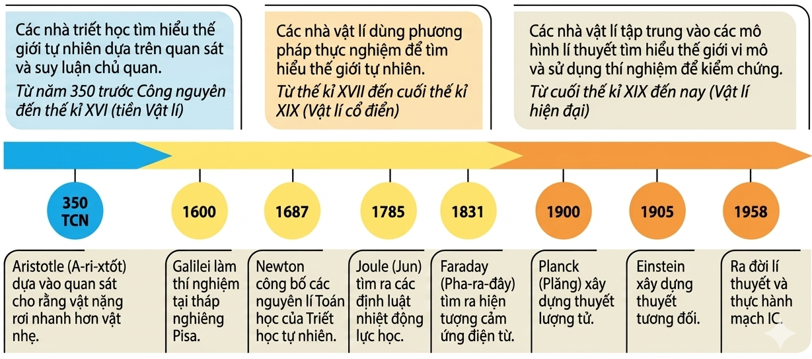
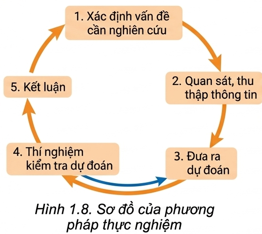

Vật lí là môn "khoa học tự nhiên" có đối tượng nghiên cứu tập trung vào các dạng vận động của vật chất (chất, trường), năng lượng.
Các lĩnh vực nghiên cứu của Vật lí rất đa dạng, từ Cơ học, Điện học, Điện từ học, Quang học, Âm học, Nhiệt học, Nhiệt động lực học đến Vật lí nguyên tử và hạt nhân, Vật lí lượng tử, Thuyết tương đối với công thức nổi tiếng \(E=m.c^{2}\).
❓ Câu hỏi thảo luận:
Dưới đây là sơ đồ trình bày các giai đoạn chính trong quá trình phát triển của Vật lí. Mỗi giai đoạn có một tính chất, đặc điểm riêng.

Các khái niệm, định luật của Vật lí được sử dụng để giải thích cơ chế của các hiện tượng tự nhiên trong sinh học, hoá học, vũ trụ... Xuất hiện nhiều môn liên ngành: Hoá lí, Sinh học lượng tử...
❓ Câu hỏi vận dụng:
- Cách mạng CN lần 1: Máy hơi nước (James Watt) dựa trên Nhiệt học.
- Cách mạng CN lần 2: Điện năng (hiện tượng cảm ứng điện từ của Faraday).
❓ Theo em, sử dụng động cơ điện có những ưu điểm vượt trội nào so với sử dụng máy hơi nước?
- Cách mạng CN lần 3 & 4: Tự động hoá, vi mạch, trí tuệ nhân tạo, vật liệu nano (dựa trên Vật lí hiện đại, bán dẫn).
👋 Hoạt động Thảo luận:
Hãy sưu tầm tài liệu trên internet và trình bày, thảo luận về chủ đề "Thế nào là thành phố thông minh?"
Bên cạnh lợi ích, nếu không sử dụng đúng phương pháp có thể gây ô nhiễm môi trường, huỷ hoại hệ sinh thái (vũ khí hạt nhân, khí thải...).
Câu chuyện về sự rơi: Aristotle suy luận vật nặng rơi nhanh hơn vật nhẹ. Gần 20 thế kỉ sau, Galilei đã thả hai quả cầu có khối lượng khác nhau tại tháp nghiêng Pisa, chứng minh thực nghiệm rằng sự rơi nhanh chậm không phụ thuộc vật nặng nhẹ. Galilei được coi là "cha đẻ" của phương pháp thực nghiệm.

Dùng mô hình để nghiên cứu vật thật. Có 3 loại phổ biến:
❓ Trả lời câu hỏi:
Dự đoán về sự phụ thuộc tốc độ bay hơi của nước vào nhiệt độ nước và gió thổi trên mặt nước, rồi lập phương án thí nghiệm để kiểm tra dự đoán (Vận dụng phương pháp thực nghiệm).
Đáp án chi tiết:
Câu 1: B (Theo mục I SGK)
Câu 2: C (Galilei làm thí nghiệm tại tháp nghiêng Pisa)
Câu 3: C (Chất điểm là một khái niệm trừu tượng lí thuyết)
Câu 4: A (Thay thế sức lực cơ bắp bằng máy móc)
Câu 5: B (Sử dụng biểu thức toán học để mô tả vật lí)
Bài 1: Bước kiểm tra mô hình
Một học sinh đo thời gian rơi của một viên bi sắt từ độ cao \(h = 2\text{m}\) và thu được \(t = 0.64\text{s}\). Biết công thức mô hình toán học của sự rơi tự do là \(h = \frac{1}{2}g.t^2\). Hãy vận dụng mô hình này để tính gia tốc rơi tự do \(g\) tại nơi làm thí nghiệm và nhận xét.
Bài 2: Phương pháp thực nghiệm
Để kiểm tra dự đoán "Chu kì dao động của con lắc đơn phụ thuộc vào chiều dài dây treo", em hãy thiết kế các bước cơ bản của phương pháp thực nghiệm theo đúng quy trình 5 bước.
Bài 3: Nhận thức về ứng dụng Vật lí
Một nhà máy thuỷ điện (như Hình 1.2 SGK) tạo ra điện năng từ thế năng của nước dựa trên cảm ứng điện từ. Hãy tính năng lượng điện sinh ra (tính bằng Joule) nếu hệ thống có công suất \(P = 500 \text{ MW}\) hoạt động liên tục trong \(1 \text{ giờ}\). Đồng thời nêu 1 tác động tiêu cực về môi trường khi xây dựng đập thuỷ điện.